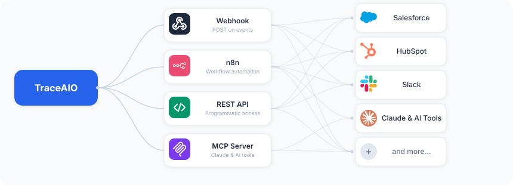

See where ChatGPT, Perplexity, and Gemini mention your brand. Find the gaps. Run real prompts against real models.
Interactive walkthrough of the dashboard, prompt generator, and analysis pipeline.
AI creates brand-neutral prompts on topics that matter in your industry, the kind of questions your potential customers actually ask. Add your own custom prompts too. Prompts are saved and reusable across runs.
Each prompt is sent to ChatGPT, Perplexity, Gemini, and Google AI Mode through an actual browser session, not an API. That's what your users see when they type the same question. API-only tests miss what real users actually get.
Uses residential proxies via Apify to run ~15 prompts/min in parallel. Different IP per request, no anti-bot issues, no risk to your infrastructure.
Free but risky. Runs a real browser on your machine, one prompt at a time. Your IP is exposed directly to each LLM provider. Anti-bot systems catch repeated requests from the same address and can block your normal access to these services. Not recommended for production.
Every response is analyzed: was your brand mentioned? Which competitors showed up? What sources were cited? Results are stored per-run so you can track changes over time, compare models, and find exactly where you're missing.
Connect Claude via MCP and query your brand data conversationally. "Which prompts mention our competitor but not us?" "What sources does Perplexity cite that Gemini doesn't?" "How did our mention rate change after the last product launch?" No SQL required.
AI creates brand-neutral prompts across topics relevant to your industry. Add your own. Reuse across runs.
Runs against ChatGPT, Perplexity, Google Gemini, and Google AI Mode via real browser sessions. Not APIs. Exactly what your users see.
Auto-detects competitors from responses. Merge duplicates, block noise, compare head-to-head.
Track which domains LLMs cite. See brand, competitor, and neutral sources. Find citation gaps.
Schedule once. Run analysis hourly, daily, weekly, or monthly. Stuck runs auto-expire after 24 hours.
Webhooks, n8n, REST API, and MCP server. Push results where you need them and pull data however you want.
Push results where you need them. Pull data however you want.
Get notified when analysis completes. Configure a URL with optional Bearer token auth, and run results arrive as a POST. Pipe them into Slack, n8n, Zapier, or your own backend.
Community node for n8n. Trigger workflows on analysis completion, sync results to spreadsheets, send reports via email, and connect to 400+ other apps.
Full API with Swagger docs. Fetch runs, responses, competitors, sources, and metrics. Build dashboards, reports, or feed data into your own analytics pipeline.
16 built-in tools for Claude Code and Claude Desktop. Query your brand data conversationally. Compare models, find citation gaps, track trends across runs.

Two ways to deploy. Pick whichever fits your workflow.